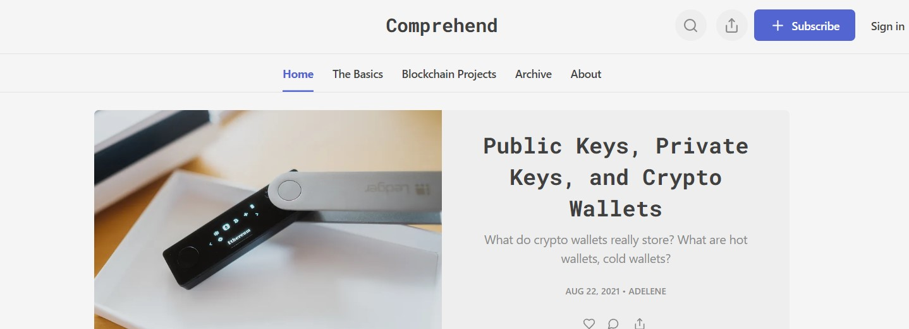

Writing Articles
 Tech Privacy and Data Cryptocurrency Economics/FinanceI am fascinated by new, emerging technologies. This interest leads me to write about the vast potential of those technologies. Each article delves into a specific technology field and provides essential background knowledge. Not only does this improve my own understanding of the subject and also allows readers to comprehend the intricacies of the technology.
As the saying goes "If you can't explain it simply, you don't understand it well enough."
At present, my focus is immersed in the Edge Artificial Intelligence (AI). I am working on implementing Edge Machine Learning in my British Sign Language Recognition project. Stay tuned on my upcoming articles, where I’ll share insights and discoveries from this exciting field!
Articles Written
- Is this the solution to VPN Problem? | Published in Geek Culture
- Ethereum Layer 2 Solution - Polygon? | Comprehend
- Ethereum Explained | Comprehend
- Proof of Stake Consensus | Comprehend
- Why does Bitcoin Mining Exist? How does it work? | Comprehend
- Ethereum London Hard Fork - What will change? | Published in Geek Culture
- Own Your Website - Where Only You Have Control Over It. | Published in Geek Culture
- Future of Gaming: Play to Earn | Published in Illumination
- Are NFTs Art Even Valuable? |
- Everyone Should Implement Digital Compartmentalization | Published in CodeX
Writing Flow
I established a daily writing habit that captures my spontaneous thoughts about technologies I come across. Although not every daily content becomes an article, this becomes a valuable database where I build upon these ideas.
Then I proceed to write draft articles where I include resources and links to fact-check my knowledge and understanding. After subsequent editing, the almost complete draft will be written in Medium’s draft article tools. This final draft is fed into grammar-checking tools like Grammarly to correct grammar faults.
An interesting feature of Medium's draft article tools is the ability to share a draft link with individuals for review. I regularly seek feedback from friends to gain an external perspective, this enhances the clarity of the article. After revising the content based on their insights, I made the decision to either submit the article to publications like Geek Culture or upload it on Medium immediately.
Additionally, I like to read articles and non-fiction books in order to improve my writing style :)